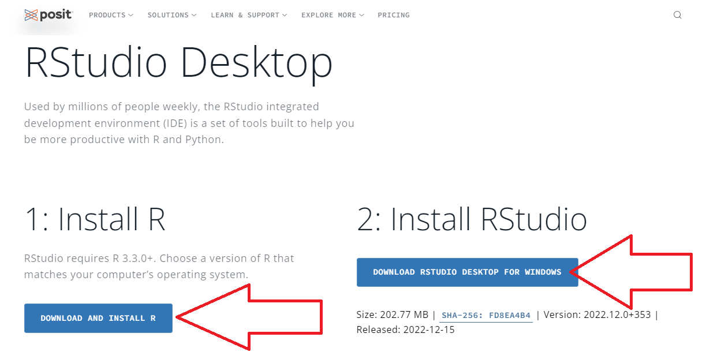
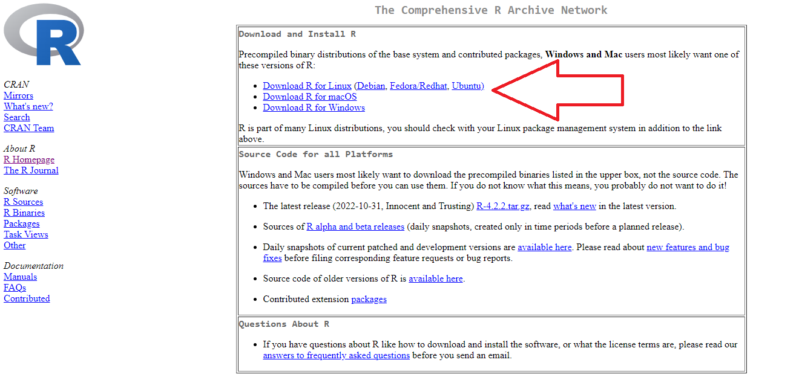
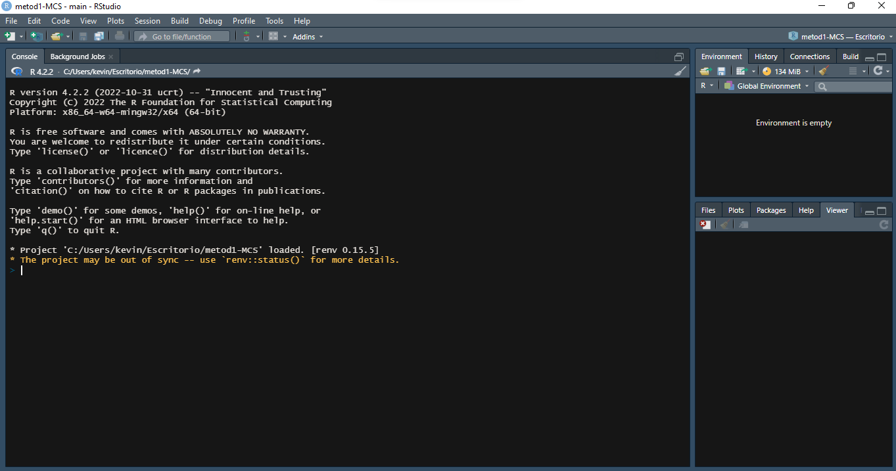
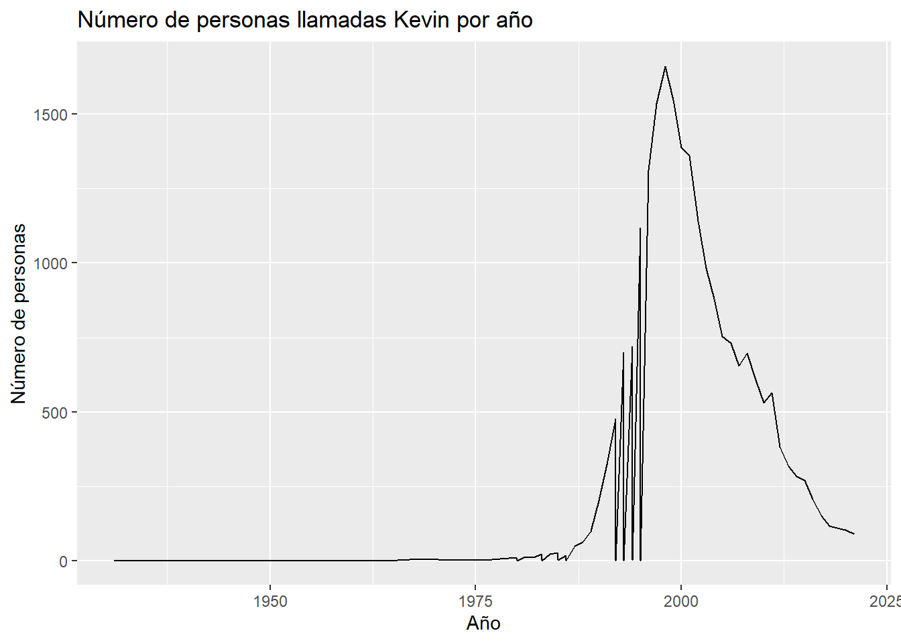

10 + 5 # ¿cuánto es 10 + 5?[1] 15Metodología Cuantitativa Avanzada - Magíster en Ciencias Sociales
Esta práctica tiene dos objetivos: 1) Generar un primer acercamiento al uso de R y Rstudio, conociendo su interfaz y sus principales funcionalidades y 2) revisar algunos procedimientos básicos de la preparación de datos con R, que son necesarios para luego poder aplicar los contenidos más específicos de este curso.
Acceder a la página de posit, desarrollador del software desde octubre de 2022. Link directo a la descarga acá.
Instalar R y Rstudio



evitar uso de tilde, ñ, espacios y mayúsculas tanto en carpetas y archivos, así como también en los nombres de las variables
al momento de hacer consultas sobre problemas en la ejecución del código, adjuntar la siguiente información:
Código completo hasta que se produce el problema
Indicar línea del código donde se produce el problema
Adjuntar el resultado del output de la información de la sesión (sessionInfo())
En primer lugar vamos a abrir un archivo de R (script). Esto se puede hacer manualmente con File -> new file -> R script o directamente con ctrl + shift + N
Esta es nuestra hoja de código, que utilizaremos para procesar bases de datos, modificar variables y crear tablas y gráficos.
R puede ser una calculadora
10 + 5 # ¿cuánto es 10 + 5?[1] 1510 * 5 # ¿cuánto es 10 * 5?[1] 50Se pueden crear objetos y asignarles valores
a <- 28
b <- 8
a + b[1] 36O asignar operaciones a un objeto
c <- a + bAsí como también agregar texto
d <- "hola"
d[1] "hola"y operaciones un poco más complejas
e <- b^2
e + a * c[1] 1072Sin embargo, la mayor parte del tiempo usamos funciones que ya existen en R
sum(28,8)[1] 36round(10.14536) #aproximar[1] 10Tal vez una de las dificultades más comunes o cotidianas del uso de R es el orden de trabajo, en donde tenemos cientos de archivos, scripts, gráficos, bases de datos u otros repartidos desordenadamente en nuestro computador. También se da mucho el caso en que, cuando queremos trabajar con alguien, tenemos que cambiar las rutas de los archivos, por ejemplo en dónde están las bases de datos, ya que nuestros ordenadores y usuarios se llaman y son escencialmente distintos.
¿Cómo podemos sortear eso? Siguiendo un flujo de trabajo reproducible, autocontenido y ordenado. En este curso trabajaremos R con un flujo de trabajo reproducible, basado en el sistema IPO. El protocolor IPO es una plantilla/protocolo de estructura digital de carpetas que tiene por objetivo el organizar, procesar y documentar los datos de un proyecto de investigación con miras a la apertura de los datos en un repositorio público y de acceso libre. En concreto, el sistema IPO se propone abordar brevemente todo lo referente a los Datos, Métodos y Resultados.

Un Rproject es una herramienta de R que nos permite establecer un directorio de trabajo en una carpeta de nuestro computador. Al hacerlo, establecemos un espacio de trabajo que permite crear una estructura de carpetas donde guardar los documentos asociados al proyecto. De esta forma, creamos un conjunto de archivos autocontenidos en un solo lugar que nos permite organizar nuestro trabajo y facilitar la reproducibilidad. En las próximas sesiones estableceremos un protocolo de trabajo que permite organizar y armonizar el trabajo: el protocolo IPO.
Para crear un Rproject:
Abrir Rstudio
Seleccionar Archivo -> Nuevo proyecto

Seleccionamos la opción de directorio existente
Seleccionamos la carpeta donde descargamos nuestro repositorio de Github en el paso anterior
Apretamos el botón de crear proyecto
Y muchas de estas funciones que utilizamos en R están contenidas en librerías o paquetes (packages)
La lógica de R es instalar librerías (solo 1 vez, con install.packages("librería")), y luego cargarlas cada vez que es necesario usarlas (con library(librería)). El problema de esto es que a veces no se sabe claramente qué librerías están instaladas y cuales no, lo que va a arrojar error al cargarlas. Y, como sucede en R, existe una librería para solucionar este problema que se llama pacman (package manager). Lo que hace pacman es cargar la librería, y si no está instalada, la instala y la carga:
Para utilizar la primera vez (si es que no está instalada):
install.packages("pacman")Y en adelante, las librerías se cargan así pacman::p_load(libreria1,libreria2,libreriaX) :
pacman::p_load(dplyr, guaguas, ggplot2)Para esta sesión las librerías que vamos a utilizar son:
dplyr: ajuste general de datos
guaguas: Paquete que contiene los datos de nombres de guaguas (bebés) registrados en Chile entre 1920 y 2021 según el Registro Civil e Identificación
Ajustar espacio de trabajo
Previo a la carga de nuestra base de datos, se recomienda ejecutar los siguientes comandos:
rm(list=ls()) # borrar todos los objetos en el espacio de trabajo
options(scipen=999) # valores sin notación científicaLa función rm(list=ls()) permite comenzar con un espacio de trabajo (environment) vacío y sin otros objetos. Así también, la función options(scipen=999) desactiva la notación científica, es decir, veremos los valores numéricos con todos sus decimales.
Datos
Cargamos la base de datos desde el paquete (para otras bases de datos se deben importar de otra forma, esto es solo como ejemplo)
base <- guaguasConocemos las dimensiones de la base de datos
dim(base)[1] 858782 5Son 858782 casos y 5 variables. Los nombres de estas variables son:
names(base)[1] "anio" "nombre" "sexo" "n" "proporcion"Y la base se ve así:
head(base)# A tibble: 6 × 5
anio nombre sexo n proporcion
<dbl> <chr> <chr> <dbl> <dbl>
1 1920 María F 2130 0.104
2 1920 José M 984 0.0483
3 1920 Juan M 636 0.0312
4 1920 Luis M 631 0.0310
5 1920 Rosa F 426 0.0209
6 1920 Ana F 340 0.0167Ahora probemos algunas funciones para seguir explorando la base
table(base$sexo)
F I M
531038 318 327426 Podemos ver la cantidad de nombres “F” (femenino), “M” (masculino) e “I” (indefinido) inscritos entre 1920 y 2021.
Pueden buscar sus nombres y probar, utilizamos la funcion filter del paquete dplyr
filter(base, nombre=="Kevin")# A tibble: 63 × 5
anio nombre sexo n proporcion
<dbl> <chr> <chr> <dbl> <dbl>
1 1931 Kevin M 1 0.0000120
2 1963 Kevin M 1 0.0000035
3 1964 Kevin M 1 0.00000344
4 1967 Kevin M 4 0.0000131
5 1970 Kevin M 6 0.0000210
6 1971 Kevin M 3 0.00000936
7 1972 Kevin M 3 0.00000945
8 1973 Kevin M 2 0.00000633
9 1974 Kevin M 5 0.0000163
10 1976 Kevin M 2 0.00000724
# ℹ 53 more rowsE incluso pueden ver la cantidad de personas con su nombre, en el mismo año que ustedes nacieron
d <- filter(base, nombre=="Kevin" & anio==1996)
sum(d$n)[1] 1312Avanzando un poco más, podemos utilizar ggplot2 para hacer un gráfico de líneas que muestre la evolución en el tiempo
datos <- filter(base, nombre=="Kevin")
ggplot(datos, aes(x = anio, y = n)) +
geom_line() +
labs(x = "Año", y = "Número de personas", title = "Número de personas llamadas Kevin por año")
¿Qué puede explicar el peak de “Kevins” previo a los 2000?
spoiler: link
guaguas %>%
filter(nombre %in% c("Salvador", "Augusto"), anio >= 1960 & anio <= 1979) %>%
ggplot(aes(anio, n, color = nombre)) +
geom_line() +
labs(x = "año", y = "total inscripciones", color = "nombre",
title = "Inscripciones de 'Salvador' y 'Augusto' entre 1960 - 1979")